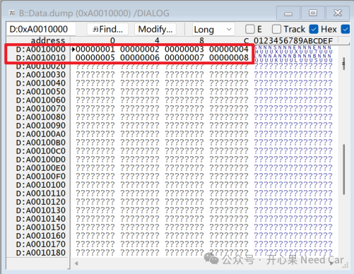
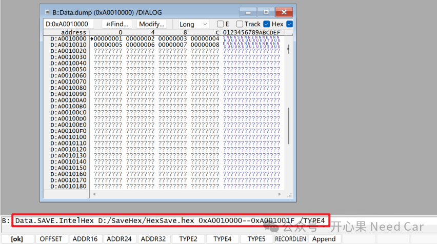
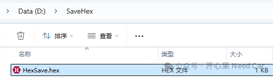
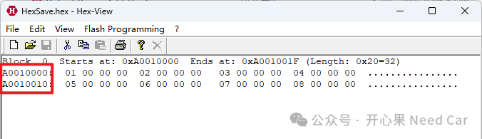
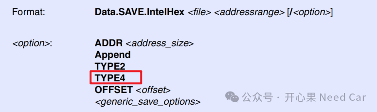
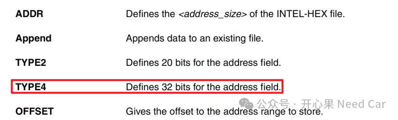

开心果 Need Car · 2025-04-17T06:38:00+08:00 · 微信原文
1、如何基于Lauterbach直接导出Intel格式的绝对地址


Data.SAVE.IntelHex D:/SaveHex/HexSave.hex 0xA0010000--0xA001001F /TYPE4




题外话
往期精彩回顾
点击下方关注，一起聊聊Autosar/嵌入式，如果需要，联系作者进群，给你更专业的解答